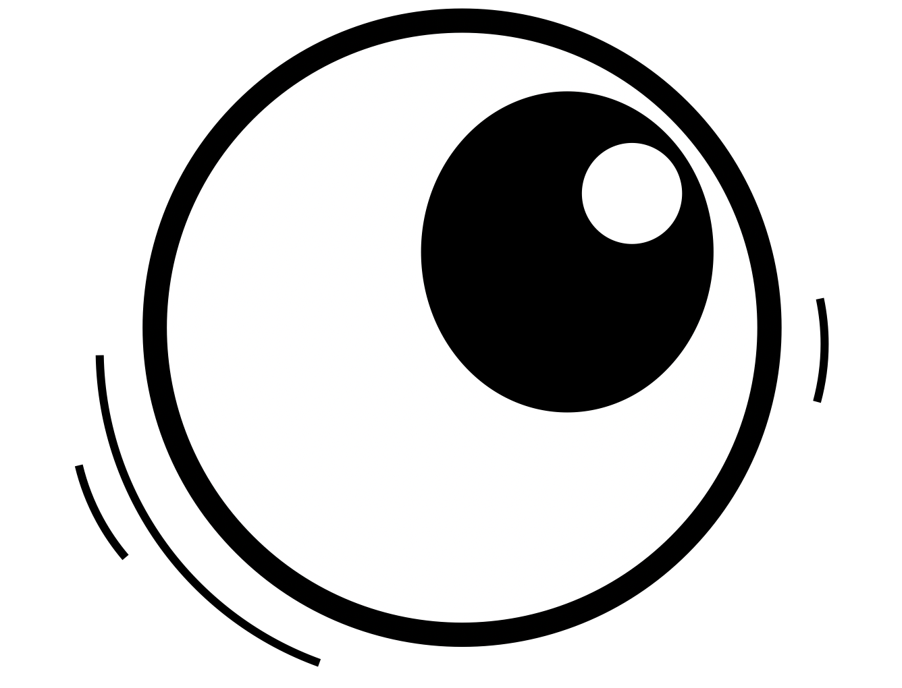

TL;DR:
train a robot eyeball üëÅÔ∏è to look around with RL to enable a BC agent ü¶æ to perform manipulation tasks.
The mechanical eyeball is co-trained with a robot arm through a BC-RL loop which frames eye gaze as
an RL agent that continuously optimizes the performance of a BC policy.
Gaze for Real-World Manipulation
EyeRobot enables manipulation over a large, panoramic workspace with a single ego-mounted active camera.
Eyeball Perspective

How it works
Eyeball Hardware
We design a performant camera gimbal which consists of two direct drive motors, which can move very quickly, precisely, and smoothly.
We use a 90fps global shutter camera, enabling smooth vision despite fast motion.
Real-to-Sim EyeGym
We capture robot demonstrations with a 360° camera and import this into an RL environment for simulating eye views.
EyeGym only simulates eye view, keeping the trajectory of the arm fixed.
BC-RL Cotraining
During BC-RL co-training, eye actions are sampled to obtain observations for training a BC ACT policy.
The eyeball is rewarded when the robot arm predicts accurate actions, leading to gaze behavior that facilitates action.
Before BC-RL
After Training
Gaze Switching in Real
This task-driven gaze learned in sim transfers to real;
the eye shifts from towel to bucket depending on the state of the arm.
In these videos the arm is free-driven while the eye policy is executing autonomously.
Foveated Transformer Architecture
We extract features in a multi-scale pyramid, enabling a small, high-resolution fovea along with a larger peripheral field of view.
These features are positionally encoded with nested 2D RoPE embeddings to consistently overlay image tokens, while other query tokens in the model are positioned at the center of the image.
Robustness to Distractors
Foveation aids the model in focusing on the target object while ignoring distractors.
Uniform Resolution
Foveated Inputs
Uniform Resolution
Foveated Inputs
Distance Invariance from Foveation
Multi-scale feature extraction allows the model to focus on even very distant objects (even outside of what it was trained on).
Uniform Resolution
With Foveation
Wrist and Exo Baselines
Failures
Failure cases are primarily due to poor depth perception of the model, owing to the low-angle position of the camera.
Secondly, long-range search can fail to locate an object
In addition, we observe occasional blind grasps where the arm grasps the mean of the data when no object is in view (i.e grasping to the far left or right if the eye cannot see the towel).
Citation
If you use this work or find it helpful, please consider citing: (bibtex)
@inproceedings{kerrj2025eyerobot,
title={Eye, Robot: Learning Hand-Eye Coordination with Reinforcement Learning},
author={Justin Kerr and Kush Hari and Ethan Weber and Chung Min Kim and Brent Yi and Tyler Bonnen and Ken Goldberg and Angjoo Kanazawa},
booktitle={TODO},
year={TODO},
url={TODO}
}